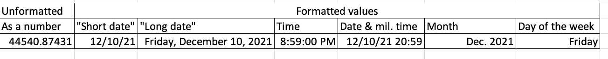

8 Sorting and filtering to find stories
8.1 A sorting miracle
After Ferguson, Mo., police killed Michael Brown in 2014, advocates and journalists began examining the racial and ethnic gap between police departments and the communities they served. The New York Times found a 7-year-old survey conducted by the Justice Department that allowed it to compare the data for major cities in a standalone graphic that it published later that year.
When newer data reflecting departments’ makeup in 2012 was released a year later, Matt Apuzzo and I hoped it would show some differences. It didn’t. So we were left trying to find news in the data that was clearly of public interest.
After matching up the demographics of police departments with their cities, I started sorting, filtering and Googling. Could there be news in the outliers on the list? Which departments most closely represented their communities? Which ones had unusually large gaps?
I quickly stumbled on telling anecdote to frame the story: Inkster, Mich. had one of the least representative departments in the country, and had recently hired a new police chief to help mend the department’s fraught relationship with its largely African-American community. Where had he come from? Selma, Ala., one of the most representative police departments in the nation. Interviews with the chief, William T. Riley III, suggested one reason for some cities’ disparities: there was no state or federal money to pay for training new police officers.
The story, “Police Chiefs, Looking to Diversity Forces, Face Structural Hurdles” helped explain the persistent gap between the makeup of police in some areas and the communities they served.
8.2 Sorting and filtering as a reporting tool
Sorting and filtering can:
- Narrow your focus to specific items that you want to examine in your story.
- Show you rows containing the highest and lowest values of any column. That can be news or it can be errors or other problems with the data.
- Let you answer quick “how many?” questions, with a count of the rows that match your criteria. (In the next lesson, you’ll see that pivot tables, or group-by queries, are much more powerful for this in most cases.)
8.3 Example data
- Data from the Washington Post for use in this tutorial
- Documentation from the Post’s github site
The data for this and several other chapters is the Washington Post’s public data collection of police shootings in the U.S. It includes the nation’s best guess about each fatal police shooting since 2015. There are a couple of caveats:
It excludes deadly police interactions other than shooting a firarem at the suspect. Any strangulation, car crashes, Tasers without guns or other methods are excluded.
It is based primarily on news reports and the results public records requests so it often contains the story as told by police. We know that many of those reports are sugar-coated at best, and lies at worst.
The Post says this is a list of fatal shootings, but doesn’t say what happens if more than one person is killed. The 2019 shooting of D’Angelo Brown & Megan Rivera in West Memphis is shown as two rows7 in the data even though it was one event. So each row might be considered a shooting “victim”, a “suspect” or a shooting “fatality” rather than a “shooting”.
The original data download link is https://github.com/washingtonpost/data-police-shootings/releases/download/v0.1/fatal-police-shootings-data.csv. The screenshots in this tutorial may not match exactly to what you get on their data – It had included incomplete 2021 data, and I added a column for the year.
It’s a good example set for us because it’s been used as the basis of many stories, it has at least one of each data type that we plan to deal with in Excel, and it is well documented on the Post’s github site.
8.4 Understanding data types
When you open the spreadsheet, the first thing to notice is its granularity. Unlike Census or budget spreadsheets, this is a list capturing specific characteristics of each fatality Each column has the same type of data from top to bottom. Those types are:
Text. Text or “character” columns can come in long or short form. When they are standardized (the values can contain only one of a small list of values), they’re called “categorical”. If they’re more free-form, they’re might be called “free text”. The computer doesn’t know the difference, but you should. The Post data has examples of both. In spreadsheets, text is left-justified (they move toward the left of the cell and will line up vertically at the beginning)
Numbers. These are pure numbers with no commas, dollar signs or other embellishments. In Excel, as we’ll see in the computing section, these can be formatted to look like numbers we care about , but underneath they’re just numbers. Adding up a column of numbers that has a word in it or has missing values will just be ignored in Excel. It will trip up most other languages. These are right-justified, so the last digit is always lined up vertically.
Logical: This is a subset of text. It can take one of only two values – yes or no, true or false. There is no “maybe”.
-
Date and times: These are actual dates on the calendar, which have magical properties. Underneath, they are a number. In Excel, that number is the number of days since Jan. 1, 1900.8 They can also have time attached to them, which in Excel is a fraction of a day. What this means is that the number 44,536.5 is really Dec. 6, 2021 at noon. In Excel, you use a format to tell the spreadsheet how you want to see the date or time, just the way you look at dollar values with commas and symbols. (If you get a spreadsheet with a lot of dates of 1/1/1900, it means there is a 0 in that column, which is sometimes a fill-in for “I don’t know.”)
Here’s a picture of a date that is shown in a variety of formats.
date formats
All of these are the same, underlying value – the number at the left. Notice that all of these are right-justified.
This means that when you see “Friday, December 10”, the computer sees 44540.87431. When you put the dates in order, they won’t be alphabetized with all of the Fridays shown together. Instead, they’ll be arranged by the actual date and time.
It also means that you can compute 911 response times even when it crosses midnight, or or compute the someone’s age today given a date of birth. Keeping actual calendar dates in your data will give it much more power than just having the words. (Excel uses the 1st of the month as a stand-in for an actual date when all you know is the month and year.)
8.5 Working with Excel “tables”
Excel lets you put any type of data anywhere on your spreadsheet. To bring a little order to the chaos, it allows you to turn your data into a “table”, which is set up for sorting and filtering. It enforces some data types on you, and deals with missing information more smoothly. It is designed for tabular data without empty rows or columns, and where there is nothing else on the sheet.
Put your cursor somewhere in the table, then use the “Format as table” button on the home screen. Check to make sure the “My table has headers” is checked.

8.5.1 Sorting rows
Sorting means rearranging the rows of a data table into a different order. Some reporters take a conceptual shortcut and call this “sorting columns”. That thinking will only get you into trouble – it lets you forget that you want to keep the rows in tact while changing the order in which you see them. In fact, in other languages it’s called “order by” or “arrange” by one or more columns – a much clearer way to think of it.
In Excel, look for the sort options under the Data tab at the top of your screen. In this case, sorting from oldest to newest gives you a list of the fatalities in chronological order, including the time of day.
To sort your data, put your cursor in one of the cells within your data area, and choose Data…Sort. Please don’t use the A->Z or Z->A buttons!
8.5.2 Filtering
Filtering means picking out only some of the rows you want to see based on a criteria you select in a column. Think of it as casting a fishing net – the more filters you add, the fewer fish will be caught.
When you created the table, it also created little drop-down arrows on the top row. If you can’t see them, use CTL-HOME or CTL-UP on the first column to get yourself back to the top. Each filter you select adds more conditions, narrowing your net.
To find fatalities that involved a firearm with a Taser, use the drop-down menu under manner_of_death select it. (This is an example of naming a column in an unexpected way. Usually, a “manner” of death relates to the circumstances such as accident, suicide or homicide. It’s why you can’t count on understanding the column names without a crib sheet from the data’s maker, called a data dictionary or record layout. The Post’s crib sheet is excellent!)
When you do this, notice that the bottom left briefly shows you the number of rows that matched your filter, and the line numbers turn blue. Any rows that don’t match your filter hidden.

This method works for small-ish and simple-ish columns. If your column has more than 10,000 different entries, such as names or addresses, only the first 10,000 will be considered. We only caught these for stories when someone did a fact-check using a different method of filtering. If your column has a lot of distinct entries, use option that says “Choose One”, and then use the “Contains” option. Better yet, don’t use filtering for counting things at all.
Add more filters to narrow down your list of cases even more. For example, the New York Times ran a series of stories in 2021 about unarmed people shot by police. One story was about those who were fleeing by car. Here’s one way to get a preliminary list of those cases:
- Remove any filter you already have on.
- Turn on the filters again if you turned them off.
- Choose “unarmed” under
armedand “car” underflee.
(Of course, the Times didn’t stop there in trying to find more cases and teasing out more of them from this and other data. But this is a start. )

8.6 Video of sorting and filtering with salaries
This video goes through many of the details of sorting and filtering. Follow along using this spreadsheet of Phoenix city salaries. It’s from a different year, but the idea is just the same.
Note that in this case, the original order of the dataset was alphabetical, except lower-case names came at the very end. It would be very hard to get back to this order in a spreadsheet if you didn’t have that leftmost column of numbers that indicated the original order.
8.7 FAQ
How do I turn off all of my sort and filters
In the data tab, chose “Clear” (the funnel with the red “X”) to remove all of the filters and sorts on your table.
I’m getting weird questions and alerts about sorting
Slow down and read the alert. There are two common types of alerts in sorting, since it has the potential to wreck your spreadsheet.
The first comes if you selected an entire column, and then just hit the button that says “A-Z” with the arrow. Excel won’t let you do that if it’s formatted as a table, but it will if it’s just a normal spreadsheet. This alert asks you if you REALLY want to sort only the column you’ve selected, separating its meaning from the rest of the rows. The answer is NO. Always. Expand the selection as Excel wants you do to by default.
filter date
The other comes when you have numbers that are treated as text. This is a tricky question, and a properly tidied spreadsheet should avoid it most of the time. If you have the same type of data in each column, the answer to this question shouldn’t matter. If not, neither one will give you what you want.